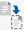

Installazione e configurazione per Linux
Installazione e configurazione per Linux
Personalizzare i flussi di lavoro predefiniti
 Suggerisci modifiche
Suggerisci modifiche
-
 PDF del sito di questa documentazione
PDF del sito di questa documentazione
-
Installazione e configurazione per Linux
-
Installazione e configurazione per Windows
-
Raccolta di documenti PDF separati
Creating your file...
È possibile personalizzare un flusso di lavoro predefinito di Workflow Automation (WFA) se non esiste un flusso di lavoro predefinito adatto alle proprie esigenze.
È necessario aver identificato le modifiche richieste per il flusso di lavoro predefinito.
Le domande e la richiesta di supporto per quanto segue devono essere indirizzate alla community WFA:
-
Qualsiasi contenuto scaricato dalla community WFA
-
Contenuto WFA personalizzato creato
-
Contenuto WFA modificato
-
Fare clic su Workflow Design > Workflow.
-
Selezionare il flusso di lavoro predefinito più adatto alle proprie esigenze, quindi fare clic su

sulla barra degli strumenti. -
Nella finestra di progettazione del flusso di lavoro, apportare le modifiche necessarie nelle schede appropriate, ad esempio la modifica della descrizione, l'aggiunta o l'eliminazione di un comando, la modifica dei dettagli del comando e la modifica dell'input dell'utente.
-
Fare clic su Preview, immettere gli input utente richiesti per visualizzare l'anteprima dell'esecuzione del flusso di lavoro, quindi fare clic su Preview per visualizzare i dettagli di pianificazione del flusso di lavoro.
-
Fare clic su OK per chiudere la finestra di anteprima.
-
Fare clic su Save (Salva).
Al termine
È possibile testare il flusso di lavoro modificato nell'ambiente di test, quindi contrassegnare il flusso di lavoro come pronto per la produzione.